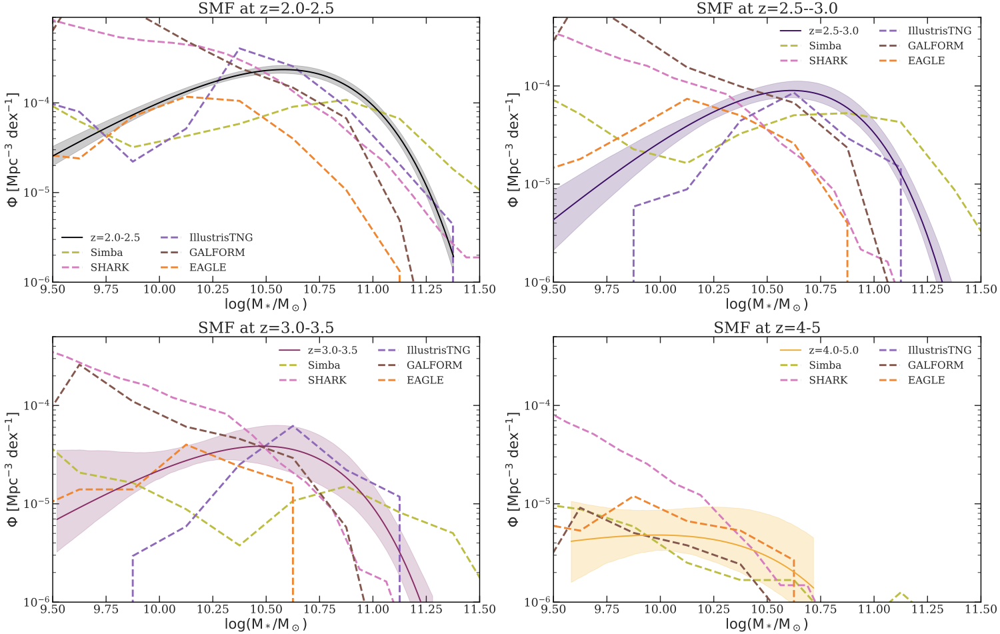
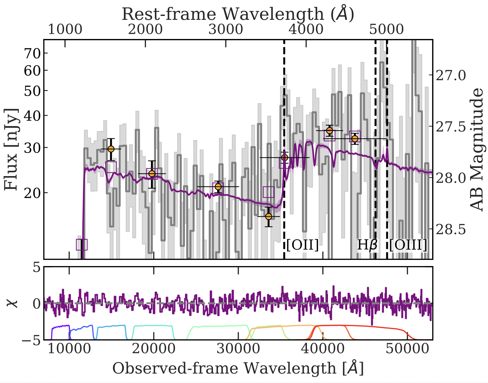

Highlight: A Core–Disc Galaxy in the Early Universe
Discovered with JWST, this galaxy shows a compact stellar core surrounded by a star-forming disc, just 700 million years after the Big Bang.
This remarkable system, located at redshift 7.4, provides the earliest evidence of inside-out galaxy growth. The dense central core resembles those found in today’s giant ellipticals, while the surrounding disc is actively forming stars. Together, they reveal that galaxies in the early Universe could already develop mature structures much sooner than expected.
The discovery received broad public attention and was covered by outlets such as Nature Astronomy and other international science media, showcasing the power of JWST to transform our view of galaxy evolution.
Selected Publications
Exploring over 700 massive quiescent galaxies at z = 2–7
Baker et al. 2025d — Submitted to A&A
Read Abstract
High-redshift (z>2) massive quiescent galaxies are crucial tests of early galaxy formation and evolutionary mechanisms through their cosmic number densities and stellar mass functions (SMFs). We explore a sample of 745 massive (M_*> 10^{9.5}M⊙) quiescent galaxies from z=2-7 in over 800 arcmin² of NIRCam imaging from a compilation of public JWST fields (with a total area >5× previous JWST studies). We compute and report their cosmic number densities, stellar mass functions, and cosmic stellar mass density. We confirm a significant overabundance of massive quiescent galaxies relative to a range of cosmological hydrodynamical simulations and semi-analytic models (SAMs). We find that one SAM, SHARK, is able to reproduce our observed number density with the addition of mock observational errors, but that it is still unable to produce quiescent galaxies of the same masses. We find that no simulations or SAMs accurately reproduce the SMF for massive quiescent galaxies at any redshift within the interval 2 ≤ z ≤ 5. This shows that none of these models' feedback prescriptions are fully capturing high-z galaxy quenching, challenging the standard formation scenarios. We also find a steeper increase in the cosmic stellar mass density for massive quiescent galaxies than has been seen previously, with an increase of around a factor of 60 from z=4.5 to z=2, indicating the increasing importance of galaxy quenching within these epochs.
Zapped then napped? A rapidly quenched remnant leaker candidate at z=8.5
Baker et al. 2025c — A&A
Read Abstract
We used NIRSpec MSA spectroscopy and NIRCam photometry to explore the properties of a rapidly quenched z=8.5 galaxy with a stellar mass of 10^{8.9}M⊙, a steep blue UV slope, a Balmer break, and no sign of strong emission lines. With a β = −2.8 ± 0.2, as measured from the NIRSpec spectrum, it is consistent with negligible dust attenuation and little to no contribution from the nebular continuum alongside a probable high escape fraction. The β slope measured from photometry varies from −3.0 in the central regions to −2.2 at the outskirts, suggesting possible regional differences in the escape fraction. There are no high-ionisation emission lines, only a tentative 2.9σ detection of [O II]. Using photometry, this emission appears to be extended, possibly corresponding to weakly ionised gas expelled during or after the quenching process. The galaxy is spatially resolved with a half-light radius of 240 pc and has an exponential, disc-like morphology. It appears to have formed all of its stars in a short burst within the past 100 Myr with a formation time of ≈70 Myr and a quenching time of ≈30 Myr. This quenching would have occurred rapidly, making it a more distant example of the kind of low-mass ‘mini-quenched’ galaxies previously observed at high-z. Due to the extremely blue β slope, our best-fit model predicts a high value for f_esc >10%, consistent with the value derived from the β slope, which when combined with our extraordinarily low O32 upper limit suggests this galaxy is a fascinating example of a high-z ‘remnant leaker’ deep in the epoch of reionisation.
The abundance and nature of high-redshift quiescent galaxies from JADES spectroscopy and the FLAMINGO simulations
Baker et al. 2025b — MNRAS

Read Abstract
We use NIRSpec/MSA spectroscopy and NIRCam imaging to study a sample of 18 massive (logM∗/M⊙>10 dex) central quiescent galaxies at 2 ≤ z ≤ 5 in the GOODS fields, to investigate their number density, star-formation histories, quenching timescales, and incidence of AGN. The depth of our data reaches logM∗/M⊙ ≈ 9 dex, yet the least-massive central quiescent galaxy found has logM∗/M⊙ >10 dex, suggesting that quenching is regulated by a physical quantity that scales with M∗. With spectroscopy as benchmark, we assess the completeness and purity of photometric samples, finding number densities 10× higher than predicted by galaxy formation models, confirming earlier photometric studies. We compare our number densities to predictions from FLAMINGO, the largest-box full-hydro simulation suite to date. We rule out cosmic variance at the 3σ level, providing spectroscopic confirmation that galaxy formation models do not match observations at z > 3. Using FLAMINGO, we find that the vast majority of quiescent galaxies' stars formed in situ, with these galaxies not having undergone multiple major dry mergers. This is in agreement with the compact observed size of these systems and suggests that major mergers are not a viable channel for quenching most massive galaxies. Several of our observed galaxies are particularly old, with four galaxies displaying 4000-Å breaks; full-spectrum fitting infers formation and quenching redshifts of z ≥ 8 and z ≥ 6. Using all available AGN tracers, we find that 8 massive quiescent galaxies host AGN, including in old systems. This suggests a high duty cycle of AGN and a continued trickle of gas to fuel accretion.
A core in a star-forming disc as evidence of inside-out growth in the early Universe
Baker et al. 2025a — Nature Astronomy

Read Abstract
The physical processes that establish the morphological evolution and the structural diversity of galaxies are key unknowns in extragalactic astrophysics. Here we report the finding of the morphologically mature galaxy JADES-GS+53.18343−27.79097, which existed within the first 700 million years of the Universe's history. This star-forming galaxy with a stellar mass of 400 million solar masses consists of three components: a highly compact core with a half-light radius of less than 100 pc, an actively star-forming disc with a radius of about 400 pc and a star-forming clump, all of which show distinctive star-formation histories. The central stellar mass density of this galaxy is within a factor of 2 of the most massive present-day ellipticals, while being globally 1,000 times less massive. The radial profile of the specific star-formation rate is rising towards the outskirts. This evidence suggests a detection of the inside-out growth of a galaxy as a proto-bulge and a star-forming disc in the epoch of reionization.
Different regulation of stellar metallicities between star-forming and quiescent galaxies - insights into galaxy quenching
Baker et al. 2024a — MNRAS

Read Abstract
One of the most important questions in astrophysics is what causes galaxies to stop forming stars. Previous studies have shown a tight link between quiescence and black hole mass. Other studies have revealed that quiescence is also associated with 'starvation', the halting of gas inflows, which results in the remaining gas being used up by star formation and in rapid chemical enrichment. In this work, we find the missing link between these two findings. Using a large sample of galaxies, we uncover the intrinsic dependences of the stellar metallicity on galaxy properties. In the case of star-forming galaxies, stellar metallicity is primarily driven by stellar mass. However, for passive galaxies, the stellar metallicity is primarily driven by the stellar velocity dispersion. The latter is known to be tightly correlated with black hole mass. This result can be seen as connecting previous studies, where the integrated effect of black hole feedback (i.e. black hole mass, traced by the velocity dispersion) prevents gas inflows, starving the galaxy, which is seen by the rapid increase in the stellar metallicity, and leading to the galaxy becoming passive.
Stellar mass, not dynamical mass nor gravitational potential, drives the mass-metallicity relationship
Baker & Maiolino 2023 — MNRAS

Read Abstract
The widely known relation between stellar mass and gas metallicity [mass–metallicity relation (MZR)] in galaxies is often ascribed to the higher capability of more massive systems to retain metals against the action of galactic outflows. In this scenario the stellar mass would simply be an indirect proxy of the dynamical mass or of the gravitational potential. We test this scenario by using a sample of more than 1000 star-forming galaxies from the MaNGA (Mapping Nearby Galaxies at Apache Point Observatory) survey for which dynamical masses have been accurately determined. By using three different methods (average dispersion, partial correlation coefficients, and random forest), we unambiguously find that the gas metallicity depends primarily and fundamentally on the stellar mass. Once the dependence on stellar mass is taken into account, there is little or no dependence on either dynamical mass or gravitational potential (and, if anything, the metallicity dependence on the latter quantities is inverted). Our result indicates that the MZR is not caused by the retention of metals in more massive galaxies. The direct, fundamental dependence of metallicity on stellar mass suggests the much simpler scenario in which the MZR is just a consequence of the stellar mass being proportional to the integral of metals production in the galaxy.
The metallicity's fundamental dependence on both local and global galactic quantities
Baker et al. 2023b — MNRAS

Read Abstract
We study the scaling relations between gas-phase metallicity, stellar mass surface density (Σ*), star formation rate surface density (ΣSFR), and molecular gas surface density (ΣH2) in local star-forming galaxies on scales of a kpc. We employ optical integral field spectroscopy from the Mapping Nearby Galaxies at Apache Point Observatory (MaNGA) survey, and ALMA data for a subset of MaNGA galaxies. We use partial correlation coefficients and Random Forest regression to determine the relative importance of local and global galactic properties in setting the gas-phase metallicity. We find that the local metallicity depends primarily on Σ* (the resolved mass-metallicity relation, rMZR), and has a secondary anticorrelation with ΣSFR (i.e. a spatially resolved version of the 'Fundamental Metallicity Relation', rFMR). We find that ΣH2 is less important than ΣSFR in determining the local metallicity. This result indicates that gas accretion, resulting in local metallicity dilution and local boosting of star formation, is unlikely to be the primary origin of the rFMR. The local metallicity depends also on the global properties of galaxies. We find a strong dependence on the total stellar mass (M*) and a weaker (inverse) dependence on the total SFR. The global metallicity scaling relations, therefore, do not simply stem out of their resolved counterparts; global properties and processes, such as the global gravitational potential well, galaxy-scale winds and global redistribution/mixing of metals, likely contribute to the local metallicity, in addition to local production and retention.
The molecular gas main sequence and Schmidt-Kennicutt relation are fundamental
Baker et al. 2023a — MNRAS

Read Abstract
In galaxy evolution the relationship between stellar mass and star-formation rate is known as the star-forming main sequence (SFMS). It is an important relation as it is used to characterise different galaxy populations. But both stellar mass and star-formation rate correlate with a third variable, the molecular gas mass. Is the relationship between star-formation rate and stellar mass fundamental or is it simply a by-product of both SFR and M* correlating with molecular gas mass? We investigate the relationship between the star formation rate (SFR), stellar mass (M*), and molecular gas mass (MH2) for local star-forming galaxies. We further investigate these relationships for high-z (z = 1-3) galaxies and for the hosts of a local sample of active galactic nuclei (AGN). We explore which of these dependencies are intrinsic and which are an indirect byproduct by employing partial correlation coefficients and random forest regression. We find that for local star-forming galaxies, high-z galaxies, and AGN host galaxies, the Schmidt-Kennicutt (SK) relation (between MH2 and SFR) and the molecular gas main sequence (MGMS; between MH2 and M*) are intrinsic primary relations, while the relationship between M* and SFR, i.e. the star-forming main sequence (SFMS), is an indirect byproduct of the former two. Hence the SFMS is not a fundamental scaling relation for local or high-z galaxies. We find evidence for both the evolution of the MGMS and SK relation over cosmic time, where, at a given stellar mass, the higher the redshift, the greater the molecular gas mass and the star formation efficiency. We offer a parametrization of both the MGMS and SK relation's evolution with redshift, showing how they combine to form the observed evolution of the SFMS. In addition, we find that the local AGN host galaxies follow an AGN-MGMS relation (as well as an AGN-SK relation), where the MGMS is offset to lower MH2 for a given M* compared to local star-forming galaxies.
The ALMaQUEST survey IX: the nature of the resolved star-forming main sequence
Baker et al. 2022 — MNRAS

Read Abstract
We investigate the nature of the scaling relations between the surface density of star formation rate (ΣSFR), stellar mass (Σ*), and molecular gas mass (ΣH2), aiming at distinguishing between the relations that are primary, i.e. more fundamental, and those which are instead an indirect by-product of the other relations. We use the ALMA-MaNGA QUEnching and STar formation survey and analyse the data by using both partial correlations and random forest regression techniques. We unambiguously find that the strongest intrinsic correlation is between ΣSFR and ΣH2 (i.e. the resolved Schmidt-Kennicutt relation), followed by the correlation between ΣH2 and Σ* (resolved molecular gas main sequence, rMGMS). Once these two correlations are taken into account, we find that there is no evidence for any intrinsic correlation between ΣSFR and Σ*, implying that star formation rate (SFR) is entirely driven by the amount of molecular gas, while its dependence on stellar mass (i.e. the resolved star forming main sequence, rSFMS) simply emerges as a consequence of the relationship between molecular gas and stellar mass.